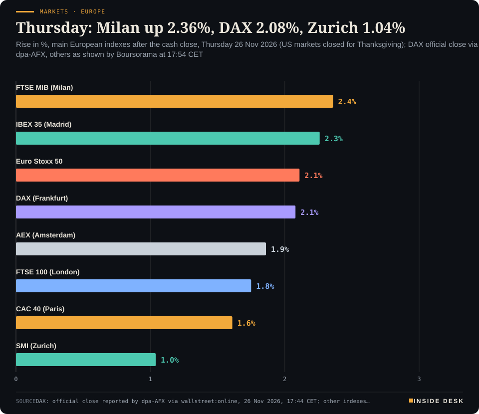
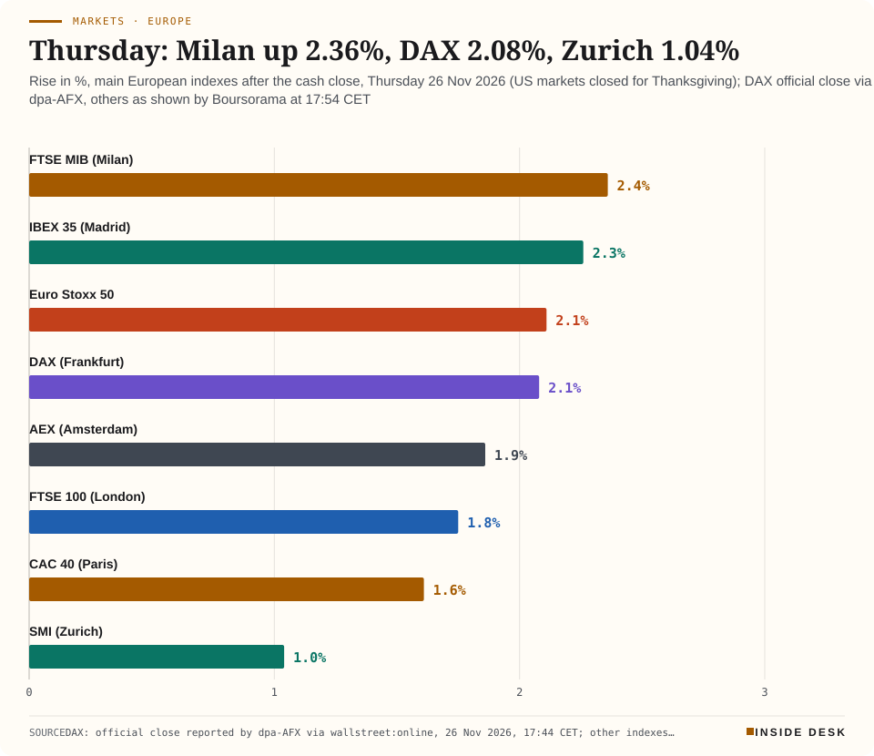
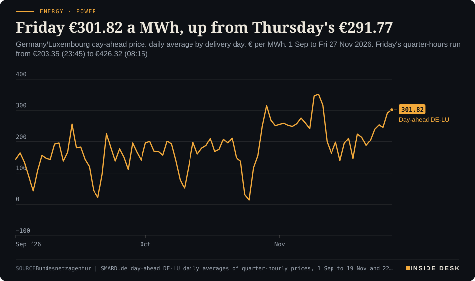
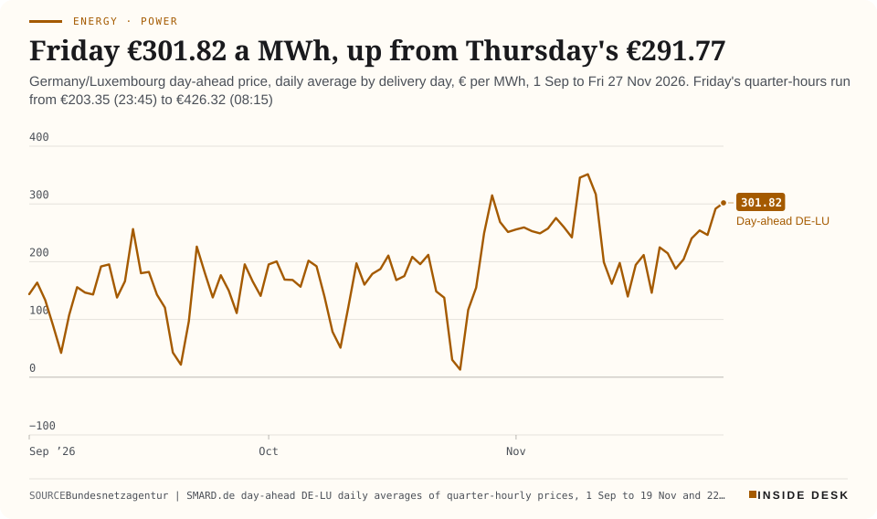

Inside Desk ePaper, Evening ePaper · Thu 26 Nov 2026
Thursday, 26 November 2026Always free
Inside Desk
Evening ePaperPublished 18:30 CET · Berlin
Lead · Money, FX & Committees
Eurozone leaders backed Pablo Hernández de Cos for the top job on the same day Frankfurt released the minutes of its October pause. The name made the headlines. The account says more about your mortgage.
Also: the DAX back above 25,000 without New York, a Podium vs Print on the EU budget, €301.82 for Friday power, Europe’s antibiotic midpoint, and a diesel tanker off Ibiza.
The ECB got a new name and published an old warning, Europe bought back what it sold on Wednesday, and Friday's electricity costs a little more because it is cold.
Geo-economics · p. 5
Markets & Macro · p. 6
Energy & Industry · p. 9
Climate & Weather · p. 15
The day in one sentenceThe ECB got a new name and published an old warning, Europe bought back what it sold on Wednesday, and Friday's electricity costs a little more because it is cold.
ContentsInside Desk · Evening ePaper26 November 2026
Also: the DAX back above 25,000 without New York, a Podium vs Print on the EU budget, €301.82 for Friday power, Europe’s antibiotic midpoint, and a diesel tanker off Ibiza.
11 edition pieces · 11 desks · Published 18:30 CET, 26 November 2026
22 ePaper extras, added , 26 November. They appear only in the ePaper and carry their own time.
18:30 Evening ePaper, updated live until 22:30 with an “Updated” time and a Latest page
Sun 10:00 The Sunday Magazine
Berlin time. Every issue is free.
How to read it
Swipe, use the arrow keys or the page strip. Tap any headline for the reading view. Press / to search, t for contents, +/− to zoom. Download the PDF.
LatestInside Desk · Evening ePaper26 November 2026
Latest
Live: this page and the issue are updated until 22:30 Berlin time.
Evening ePaper published. No updates yet.
LeadInside Desk · Evening ePaper26 November 2026
Money, FX & Committees · Lead · 2 min
Eurozone leaders backed Pablo Hernández de Cos for the top job on the same day Frankfurt released the minutes of its October pause. The name made the headlines. The account says more about your mortgage.
Two things came out of the euro’s institutions on Thursday. In Brussels, a majority of eurozone governments backed Pablo Hernández de Cos, 55, head of the Bank for International Settlements and governor of the Bank of Spain from 2018 to 2024, to succeed Christine Lagarde; he secured more support than the former Dutch governor Klaas Knot1. Lagarde leaves on 7 February 2027. France’s Laurence Boone is in line to take over market operations from Isabel Schnabel, and Germany’s Markus Brunnermeier to replace chief economist Philip Lane1. The appointments are to be made in December, after consultation1.
In Frankfurt, the ECB published the account of its 28–29 October meeting, when it kept the deposit rate at 2.50%2. It is drier reading and more useful. Oil and gas futures had moved above the adverse scenario of September’s staff projections; inflation fixings peaked at 4.5% for January 20272. Members agreed communication should convey ‘that another rate hike would likely be necessary unless the inflation outlook improved significantly’2. The pause, they wrote, ‘did not reflect diminished concern’2.
Economists quoted by Euronews call Hernández de Cos slightly more dovish than Knot, but expect the change of leadership alone to alter little1. That is the right expectation. A central bank that works is a committee with minutes, not a person with a temperament. On Thursday you saw both, and the minutes were louder.
This is reporting, not investment advice.
Geo-economicsInside Desk · Evening ePaper26 November 2026
Geo-economics · 2 min
Washington's overcapacity tariffs would cap the EU at the rate already in last year's deal. The Commission objects anyway, and it is right to object to the method.
China, the EU and other partners pushed back on Thursday against the tariffs of up to 20% that Washington proposed after its Section 301 probe into excess capacity1. For the EU, South Korea and Taiwan, which have trade deals with the US, the duties would be broadly capped at 15%1. That is the same number the EU agreed last year. Trade commissioner Maroš Šefčovič still rejected the decision and said Washington should respect that 15%1.
Why object to a number you already accepted? Because the instrument matters. A deal is a contract with two signatures. A Section 301 finding is a unilateral verdict that can be revised by one side. ‘The EU and the US share a real concern about global overcapacity, much of it state-driven and concentrated in third countries. We regret the lack of joint action,’ said Commission spokesman Olof Gill1.
The new levies would not stack on sector tariffs such as those on cars and steel, a senior US official said1. China’s commerce ministry called the probe an act of unilateralism1. The dull lesson: in trade, the paperwork is the policy.
Geo-economics · Short item · ePaper extra, added
Norse Atlantic grounded every flight and warned of bankruptcy. It is not the first carrier this autumn.
Norwegian long-haul carrier Norse Atlantic cancelled all of Thursday’s flights and said its board would file for bankruptcy unless short-term financing was secured urgently1. At 0.04 kroner a share it was worth about $9.7 million1. Euronews links the crisis to surging jet-fuel prices since the war in the Middle East1. Spain’s Plus Ultra stopped flying on Tuesday, and airBaltic filed for Chapter 11 in September1.
A war far away arrives as a fuel invoice. Airlines with thin margins pay it first, and passengers with booked tickets find out at the gate.
Geo-economics · Brief · ePaper extra, added
In a separate announcement, the US Trade Representative also proposed additional tariffs on goods from Brazil, including aircraft, over alleged inaction on US trade concerns, France 24 reported1. The Brazilian president’s office called the measures ‘unacceptable’ and said Brasília would ‘not yield to this type of threat’1. Two files in one week: the overcapacity probe for 14 economies, and a single-country case for the 15th.
Markets & MacroInside Desk · Evening ePaper26 November 2026
Markets & Macro · 2 min
Wall Street was shut for Thanksgiving. Frankfurt bought what had fallen most, on thin volume and a hint that US tariffs may be milder than feared.
The DAX ended Thursday 2.08% higher at 25,215.52 points, back above 25,000 after Wednesday’s fall to its lowest level since July, dpa-AFX reported4. The rebound followed the turn that US technology shares made late on Wednesday4. ‘Nach den turbulenten Tagen bietet die Pause Anlegern eine willkommene Gelegenheit zum Durchatmen,’ wrote eToro analyst Maximilian Wienke: the holiday gives investors a chance to catch their breath4. New York was closed for Thanksgiving; trading thinned out through the afternoon without spoiling the mood, as Andreas Lipkow wrote for wallstreet:online2.
Markets · EuropeThursday: Milan up 2.36%, DAX 2.08%, Zurich 1.04%Rise in %, main European indexes after the cash close, Thursday 26 Nov 2026 (US markets closed for Thanksgiving); DAX official close via dpa-AFX, others as shown by Boursorama at 17:54 CET


Bar chart of the rises on the main European stock indexes after the cash close on Thursday 26 November 2026, a day when US markets were closed for Thanksgiving: FTSE MIB (Milan) up 2.36 percent to 48,362.35, IBEX 35 (Madrid) up 2.26 percent to 19,057.90, Euro Stoxx 50 up 2.11 percent to 6,018.65, DAX (Frankfurt) up 2.08 percent to 25,215.52 at the official close, AEX (Amsterdam) up 1.86 percent to 1,083.26, FTSE 100 (London) up 1.75 percent to 10,609.30, CAC 40 (Paris) up 1.61 percent to 8,108.74, SMI (Zurich) up 1.04 percent to 14,817.68. DAX figure as reported by dpa-AFX; the others as shown by Boursorama at 17:54 CET.
Source: DAX: official close reported by dpa-AFX via wallstreet:online, 26 Nov 2026, 17:44 CET; other indexes: Boursorama levels after the cash close, retrieved 26 Nov 2026, 17:54 CET · reported figures · CSV
The buying went to what had been sold hardest: chipmaker Infineon and Siemens Energy, plus carmakers still lifted by Wednesday’s analyst notes2. Handelsblatt reported signs that the planned US tariffs on EU goods could turn out milder than feared3. Chief analyst Jochen Stanzl put it plainly: on Monday investors bought because of Jensen Huang’s return, ‘jetzt wegen des Preises’, now because of the price3.
Across Europe the rise was broad: by Boursorama’s figures after the cash close, Milan was up 2.36%, Madrid 2.26%, the Euro Stoxx 50 2.11%, London 1.75%, Paris 1.61% and Zurich 1.04%1. One good day after a bad one restores the level, not the argument. The question Stanzl raised, whether the AI billions pay off when rates rise, is still open3.
This is reporting, not investment advice.
Markets & Macro · Short item · ePaper extra, added
The sectors that fell hardest rose most. The safe ones barely moved.
Among the Euro Stoxx sector indexes, autos and parts rose 3.18%, technology 3.06%, basic resources 3.00% and banks 2.49% on Thursday, Boursorama’s figures after the close show1. Food and beverages gained 0.05%1. Andreas Lipkow wrote that investors focused on the tech and car shares that had come under heavy pressure recently2.
A rebound led by the most-sold sectors is a relief rally, not yet a change of view. The quiet number is food’s 0.05%: nobody needed to buy the shelter back, because nobody had run from it.
This is reporting, not investment advice.
Markets & Macro · Brief · ePaper extra, added
Boursorama’s closing levels show an Asia that read Wednesday’s late Wall Street rebound in different ways1. Taiwan’s Taiex gained 2.50% to 39,151.81, Hong Kong’s Hang Seng 1.19% and Tokyo’s Nikkei 225 0.86%1. The Shanghai Composite was flat, up 0.01%, while the Shenzhen Composite fell 3.45%1. One region, one night, three verdicts. That is what a market is supposed to look like.
This is reporting, not investment advice.
Politics & InstitutionsInside Desk · Evening ePaper26 November 2026
Politics & Institutions · Podium vs Print · 2 min
EU leaders spent Thursday describing how far apart they are on the 2028–2034 budget. The documents on the table say exactly how far.
Podium
“We are light years away from a solution to this problem.”
Giorgia Meloni, Italian prime minister, European Council, Brussels, Thursday 26 November 2026
Printalmost €1.6tn
a seven-year budget worth almost €1.6 trillion
Costa's draft for the 2028–2034 budget, as summarised by Euronews, 26 November 2026
The podium. ‘We are light years away from a solution to this problem,’ Giorgia Meloni said in Brussels on Thursday1. Hungary’s Péter Magyar put the chance of a deal at the summit at ‘pretty much zero’ and said a Christmas deal ‘doesn’t seem likely either’1. European Parliament president Roberta Metsola said MEPs would not rubber-stamp a deal2.
The print. António Costa’s draft is a seven-year budget of almost €1.6 trillion1. Seven ‘frugals’ — Austria, Belgium, Germany, Denmark, Finland, the Netherlands and Sweden — want it trimmed; 17 ‘Friends of Cohesion’ reject further cuts1. Beside it sits the Commission’s €45 billion loan for Ukraine, financed through joint debt, from which three countries want to opt out1. Friedrich Merz warned Germany could block the budget if countries pulled out of supporting Ukraine1.
The gap. The speeches describe a chasm. The papers describe a negotiation over a number with a known size and two clear camps. Costa broke the summit into small groups, starting with the frugals1. That is what closing a gap looks like: dull, in rooms, line by line.
Politics & Institutions · Short item · ePaper extra, added
The Bundestag passed the interior ministry's 2027 budget, about €1 billion more than this year. The final vote is on Friday.
The Bundestag approved the interior ministry’s budget for 2027 on Thursday, BR24 reported, about one billion euros more than this year2. Presseonline put the total at €16.8 billion, with more for the federal police, the Federal Criminal Police Office and the domestic intelligence service1. Minister Alexander Dobrindt said the budget repositions Germany on security, with reforms of the intelligence service, the federal police and cyber defence2. The justice, economy, housing, agriculture and family budgets followed during the day; the whole federal budget is due for its final vote on Friday1.
Serbia will hold a presidential election on 27 December to choose Aleksandar Vučić’s successor, The Guardian’s Europe live blog reported on Thursday1. An election date is the most ordinary institutional fact there is. It is also the one that matters most.
Psychology & BehaviourInside Desk · Evening ePaper26 November 2026
Psychology & Behaviour · 2 min
A Scandinavian register study finds no higher risk of autism, ADHD or learning disorders in children whose mothers took ADHD medicine in pregnancy. Its value is in the size of the denominator.
Many women with ADHD stop their medication when they become pregnant, for lack of evidence, and that can hurt their mental health and family stability, BMJ Group notes1. A study published in The BMJ on Wednesday adds the evidence. Researchers used health registers in Denmark, Norway and Sweden covering 3,643,376 children born between 2000 and 2021, followed for a median of nine to ten years1. Of these, 7,595 (0.2%) were exposed to ADHD medication in pregnancy1.
After adjusting for factors such as the mother’s age, education, smoking and her own ADHD diagnosis, neither exposure overall nor by drug type — methylphenidate in 69% of cases, amphetamines 20%, atomoxetine 7% — was linked to a higher risk of any neurodevelopmental disorder1. The authors write that concerns about such risks ‘do not justify discontinuation of ADHD medication in pregnancy’1.
The limits are stated too: the study is observational, and unmeasured factors such as ADHD severity or genetics could play a part1. That honesty is the point of the Annex. A good study tells you what it found and what it cannot rule out, and lets the doctor and the patient decide.
This is reporting, not medical advice.
Psychology & Behaviour · Short item · ePaper extra, added
Sensible government advice to keep three days of supplies has been turned into doomsday rumours online.
Countries such as the UK and Japan have advised households to keep at least three days of essentials, and online rumours have turned that guidance into talk of an impending world war, Euronews and AFP report1. UK media reported that tinned-food sales at Iceland briefly rose 40% in late October1. ‘Misinformation prevails in an information vacuum,’ said Yotam Ophir of the University at Buffalo: when advice lacks context, people ‘fill the gap with their own alternative explanations’1.
The calm answer is more detail, not less advice. A three-day shelf is a plan, not a prophecy.
‘No, I do not believe that we should “surrender human free will” to AI systems, and it’s absurd to suggest that I do,’ Anthropic’s Dario Amodei wrote on Wednesday, after an Axios report1. ‘We should never sacrifice legitimacy or self-determination at the altar of efficiency or security,’ he added1. Euronews notes he had earlier said that in ‘life-critical, safety-critical cases, we really want to turn it over’1. The useful test of such words is not the post. It is which decisions the products actually take away from you.
Energy & IndustryInside Desk · Evening ePaper26 November 2026
Energy & Industry · 2 min
German wholesale power for Friday averages above €300 a megawatt hour, the most since 11 November. Brent, meanwhile, rose on mines in Hormuz. Only one of the two arrives on your meter.
Friday’s day-ahead auction for Germany and Luxembourg averages €301.82 per megawatt hour, up from €291.77 for Thursday, according to Energy-Charts data from Bundesnetzagentur and SMARD1. Friday’s quarter-hours range from €203.35 at 23:45 to €426.32 at 08:151. It is the highest daily average since 11 November.
Energy · PowerFriday €301.82 a MWh, up from Thursday's €291.77Germany/Luxembourg day-ahead price, daily average by delivery day, € per MWh, 1 Sep to Fri 27 Nov 2026. Friday's quarter-hours run from €203.35 (23:45) to €426.32 (08:15)


Line chart of the daily average German-Luxembourg day-ahead electricity price from 1 September to 27 November 2026, in euros per megawatt hour. Prices mostly ran between about €100 and €210 in September and October, climbed above €250 from late October, peaked at €351.48 on Tuesday 10 November, fell to €139.70 on Sunday 15 November, were €246.29 on Wednesday 25 November and €291.77 on Thursday 26 November, and stand at €301.82 for the latest delivery day, Friday 27 November, the highest daily average since 11 November.
Source: Bundesnetzagentur | SMARD.de day-ahead DE-LU daily averages of quarter-hourly prices, 1 Sep to 19 Nov and 22 Nov 2026 retrieved 22 Nov 2026; 20, 21 Nov retrieved 23 Nov; 23 to 25 Nov via Fraunhofer ISE Energy-Charts (data: Bundesnetzagentur | SMARD.de), retrieved 24 Nov 2026; 26 Nov retrieved 25 Nov 2026; 27 Nov retrieved 26 Nov 2026, 17:33 CET · CC BY 4.0 · CSV
The cause is unremarkable: high pressure and cold air over much of Germany, with light to moderate frost and persistent frost in the east and south on Friday, the German weather service reported3.
Oil moved for other reasons. Brent was up $1.64, or 1.73%, at $96.25 a barrel on Thursday afternoon after Iran said mines struck two tankers in the Strait of Hormuz and the Houthis claimed an attack on Ras Tanura2. PVM’s Tamas Varga sees a new range of around $88–97 for Brent2. WTI will have no settlement because of Thanksgiving2. The power price has a meteorological explanation; the oil price, for now, has a rumour and a range.
This is reporting, not investment advice.
Energy & Industry · Short item · ePaper extra, added
Mines in Hormuz pushed Brent up again. A supply surplus and higher rates may cap it.
Iran’s Revolutionary Guards said two tankers exploded and caught fire after hitting sea mines north of Oman’s Khasab port; one was a supertanker carrying more than two million barrels, according to the Guards1. Brent rose to $96.251. PVM’s Tamas Varga said a perceived supply surplus and sticky inflation, which forces central banks to raise rates, could ‘set a ceiling’ on prices1. OPEC+ ministers meet on 29 November and may roll over current targets for the first quarter of 2027, two sources told Reuters1.
This is reporting, not investment advice.
Energy & Industry · Brief · ePaper extra, added
A new fire broke out at the Kuibyshev refinery in Samara on Thursday morning, a day after it was struck, and Ukrainian forces hit the Subkhankulovo station, a hub of the Transneft trunk pipeline system in Bashkortostan1. A drone attack also caused a fire with serious damage at the Slavyansk ECO refinery in Krasnodar region, Reuters reported2. Pipelines and refineries are the war’s quiet targets: each one changes what Russia can sell abroad.
Money, FX & CommitteesInside Desk · Evening ePaper26 November 2026
Money, FX & Committees · Short item · ePaper extra, added
The ECB's markets desk and its chief economist are changing hands too, which matters as much as the president.
Besides the presidency, eurozone governments discussed two Executive Board seats on Thursday, Euronews reported1. France’s Laurence Boone is expected to take responsibility for market operations from Isabel Schnabel, who leaves on 3 January 2027 for the IMF1. Germany’s Markus Brunnermeier is in line to replace chief economist Philip Lane, whose term ends on 31 May 20271.
In October it was Lane who proposed keeping rates unchanged2. A president chairs the committee. The chief economist writes the first draft of its thinking.
Money, FX & Committees · Brief · ePaper extra, added
In Isabel Schnabel’s market briefing to the October meeting, inflation fixings for 2026 and 2027 had shifted higher, peaking at 4.5% for January 2027 and staying above 2.5% until the first quarter of 2028, the account shows1. Market pricing pointed to a deposit-rate peak around 3%1. Diesel crack spreads stood above their levels after Russia’s 2022 invasion1. The account is a list of prices the committee looked at. That is why it is worth reading.
Ordinary & Inherited LifeInside Desk · Evening ePaper26 November 2026
Ordinary & Inherited Life · 2 min
German consumer mood barely moved before Christmas, a British discounter went under, and an online marketplace promised to make refunds simpler. Three entries from the shop floor.
−30.2. The NIM consumer climate, powered by GfK, rose 0.7 points to −30.2 for December, from a revised −30.91. Income expectations rose 1.8 points to −13.9, but are almost 14 points lower than a year ago; the propensity to buy edged up to −11.51. ‘Für das bevorstehende Weihnachtsgeschäft sind das keine guten Vorzeichen,’ said NIM’s Rolf Bürkl: not good signs for Christmas trade1. Price expectations rose to 2.8, despite the fuel rebate1.
600 shops. UK discounter Poundland went into administration on Wednesday, putting about 11,000 jobs and 600 stores at risk2. Its owner said that even after £100 million of cost savings the business remained ‘vulnerable to inflationary pressures’2. The shops keep trading for now2.
14 days. Temu committed to EU consumer authorities to make withdrawals, returns and refunds simpler, to show prices more clearly and to drop messages pressing shoppers to buy, the Commission said3. National authorities will monitor compliance3. On the eve of Black Friday, that is the useful entry: a right you can use, not a discount you are told to chase.
Ordinary & Inherited Life · Short item · ePaper extra, added
Germany's civil protection office has advice for emergency supplies that avoids waste.
Germany’s Federal Office of Civil Protection and Disaster Assistance recommends buying food that people regularly eat and using up older supplies first, and storing non-perishables airtight in a cool, dry, dark place, Euronews reports1. The UK’s Be Ready campaign suggests building up supplies over several shopping trips and checking expiry dates every six months1. In the EU, more than half of the nearly 58 million tonnes of food waste in 2024 came from households1. A reserve you rotate is preparedness. A reserve you forget is waste.
Ordinary & Inherited Life · Brief · ePaper extra, added
The NIM saving indicator fell 1.6 points to 15.6, its second decline in a row, which helped lift the consumer climate slightly1. Economic expectations, after six increases, fell 3.7 points to −1.61. The survey ran from 28 October to 9 November with about 2,000 interviews1. Households saving a little less while expecting a little worse is not a contradiction. It is what happens when prices have already eaten the cushion.
Tech & ComputeInside Desk · Evening ePaper26 November 2026
Tech & Compute · 2 min
After a €200 million fine in May and critical findings in November, the marketplace promised EU consumer authorities a list of ordinary obligations. That is what enforcement is for.
Temu has committed to change several practices to comply with EU consumer law, the Commission said on Thursday1. The list is unglamorous: more accessible company information, better customer support, simpler withdrawals, returns and refunds, more reliable reviews, clearer pricing, an end to messages pressing customers to buy, removal of forced gamification features, substantiated environmental claims and a clearer checkout1.
‘Temu’s commitments are an important step towards ensuring consumers can shop online with confidence,’ said commissioner Michael McGrath, adding that the Commission would ‘continue to closely monitor’ compliance1. In May the Commission fined Temu €200 million after investigators found dangerous baby toys and faulty chargers on the platform; in early November preliminary findings said it had not changed enough1.
The case now passes to national authorities1. That is the right order of things. Regulation rarely wins with one dramatic fine. It wins when a company’s lawyers conclude that obeying the boring rules is cheaper than arguing about them.
Tech & Compute · Short item · ePaper extra, added
Infineon and Siemens Energy led Frankfurt's rebound. The AI question underneath is unchanged.
Frankfurt’s buyers went for the recently battered technology names, Infineon and Siemens Energy among them, wallstreet:online reported2. ‘Griffen Anleger am Montag noch wegen der Rückkehr von Jensen Huang zu, kaufen sie jetzt wegen des Preises,’ chief analyst Jochen Stanzl told Handelsblatt1. The real question, he said, remains whether the billions invested in AI pay off, especially if rates rise and a growing share is financed on credit1.
Buying on price is the healthier motive. It means someone did the arithmetic instead of listening to a keynote.
This is reporting, not investment advice.
Tech & Compute · Brief · ePaper extra, added
Anthropic’s initial public offering last week was the largest on record, with the company’s value at one point above $2 trillion, Euronews reported1. Meta’s AI chief Alexandr Wang warned on Sunday: ‘We should not be okay with a “handover” of society to AI’1. When a company is worth that much, its chief’s philosophy becomes a market fact. That is one more reason for the dull machinery of disclosure.
Health & CareInside Desk · Evening ePaper26 November 2026
Health & Care · 2 min
The OECD and the Commission find MRSA bloodstream infections already at the 2030 goal, and a resistant Klebsiella up 72% since 2019. The fix is mostly hand hygiene and prescribing.
Health at a Glance: Europe 2026 takes stock halfway to the EU’s 2030 targets on antimicrobial resistance1. One of six is already met: the incidence of MRSA bloodstream infections1. Elsewhere the picture is worse. The estimated incidence of bloodstream infections with carbapenem-resistant Klebsiella pneumoniae was 72% higher in 2025 than in 2019, and resistant E. coli infections were also above their 2019 level1.
Human antibiotic use fell 5% between 2019 and 2025, from 19.9 to 18.9 daily doses per 1,000 people; to reach the target the EU would need a further 16% cut1. Austria and Finland have already met their national goals1. In animals, veterinary antimicrobial sales fell 24% between 2018 and 20241.
ECDC estimates resistant infections cause more than 35,000 deaths a year in the EU/EEA1. The OECD’s modelling says packages of stewardship, better hand hygiene, delayed prescribing and safer food handling save lives and cost less than they save1. It is the least glamorous medicine there is. It is also the one that pays for itself.
This is reporting, not medical advice.
Health & Care · Short item · ePaper extra, added
The Parliament approved the Critical Medicines Act on Wednesday. It rewards local production and allows joint buying.
MEPs in Strasbourg approved the Critical Medicines Act by 592 votes to 35, with 30 abstentions, Agence Europe reported1. It sets criteria for projects that can receive national or EU support to build or modernise drug production in the EU; supported firms must prioritise supplies to the European market1. Public tenders will reward suppliers in proportion to the share of medicines and active ingredients made in the EU, and at least five member states can launch joint procurement1.
Shortages are solved in factories and tenders, not in press releases. This law works on both.
Health & Care · Brief · ePaper extra, added
ECDC estimates that infections with antibiotic-resistant bacteria cause more than 35,000 deaths a year in the EU/EEA, the OECD and Commission report notes1. OECD modelling puts the combined cost of resistance, from health spending to lost work, at an average of 11.7 billion euros (in purchasing-power terms) a year across the EU to 20501. Its policy packages, it says, generate savings that exceed their costs1. Prevention rarely gets a ribbon-cutting. It gets a smaller bill.
Security & OrderInside Desk · Evening ePaper26 November 2026
Security & Order · 2 min
Russia struck Kharkiv and Kyiv overnight; Ukraine hit a chemical plant and refineries deep inside Russia. Through the Red Cross, the dead went home.
Russia attacked overnight with Iskander-M, Zircon and S-400 missiles and 113 drones, including decoys; Ukraine’s air defences shot down or neutralised 87 targets, Euronews reported1. At least three people were killed in Kharkiv, where a residential building and an educational institution were hit, and seven were injured in Kyiv1.
Ukrainian drones struck the Nevinnomyssky Azot chemical plant in Stavropol region, which produces components for the explosives octogen and hexogen, and the power station beside it; two people were wounded1. A new fire broke out at the Kuibyshev refinery in Samara, and the Subkhankulovo pipeline station in Bashkortostan was hit1. Russia’s defence ministry claimed 343 Ukrainian drones destroyed; Euronews could not verify that1.
Through the International Committee of the Red Cross, Russia returned the bodies of 250 servicemen to Ukraine and received 22, according to Russian sources partially confirmed by a Russian search organisation1. Zelenskyy warned that Russia is preparing a ‘new massive strike’ on energy facilities2. The war’s arithmetic is grim, but the repatriations show one mechanism still functions on a schedule.
Security & Order · Brief · ePaper extra, added
After talks with Nato secretary general Mark Rutte, Donald Trump wrote that in his discussions with Vladimir Putin in China he had ‘spent a lot of time talking about the fact that I would like to see president Putin pull back all military aggression against territories throughout Europe’, The Guardian reported1. What ‘territories throughout Europe’ means was left undefined, the blog noted, after incidents involving Russia in Estonia, Denmark and Poland1. A sentence is not a policy. The test is what follows it.
Security & Order · Brief · ePaper extra, added
Commenting on Ukraine’s attack on Russian ships in Libya, Foreign Minister Johann Wadephul said Germany supports Ukraine and its right to self-defence, but ‘I strongly warn against allowing this conflict to spread geographically’, France 24 reported, citing Reuters1. He spoke at a press conference in Berlin with his Romanian counterpart1. Support and restraint in the same sentence is not a contradiction. It is the job description of an ally.
Climate & WeatherInside Desk · Evening ePaper26 November 2026
Climate & Weather · 2 min
A Malta-flagged tanker capsized overnight off a Unesco-listed seabed. One crewman died; the pollution response is running. The difference from 2002 is the cargo and the procedure.
The Med Emre, a Malta-flagged chemical tanker carrying up to 7,000 tonnes of diesel from Algeciras to Barcelona, capsized 25 nautical miles off Ibiza on Wednesday night1. All 17 crew were rescued; seven went to hospital and one later died1. The crew had reported a leak and a 90-degree list minutes after a distress call around 22:30 local time1.
The hull has not sunk completely, which the Balearic emergencies director Pablo Gárriz said makes operations possible at the surface rather than at a depth of 1,000 metres1. A plane and Spain’s pollution-control vessel Clara Campoamor are assessing possible damage; ‘there is still little information available about a possible fuel spill’, the Balearic president Marga Prohens wrote1.
The stakes are real. Ibiza’s marine environment, with its Posidonia seagrass meadows, has been on Unesco’s World Heritage List since 19991. In 2002 the Prestige spilled more than 60,000 tonnes of heavy fuel oil off Galicia1. This time the response began within hours. That is not luck. It is two decades of procedure.
Climate & Weather · Short item · ePaper extra, added
Snow eased at the Alpine edge on Thursday evening. The east gets a light dusting overnight.
High pressure and cold air dominate, with the remnants of an Italian low bringing snow to the south-east, the German weather service said1. Thursday brought 3 to 10 cm at the Alpine edge, up to 15 cm in places, easing by evening1. Overnight, light snow is expected from Saxony to southern Brandenburg and Thuringia, often little, 1 to 3 cm in eastern Saxony; there is light to moderate frost widely, and persistent frost in the east and south on Friday1. Black ice from re-freezing is possible in places1. Leave five minutes earlier; the gritting lorries have a schedule too.
Climate & Weather · Brief · ePaper extra, added
Food waste already accounts for up to 10% of global emissions, and food loss and waste generate nearly five times the emissions of aviation, Euronews reports1. The EU generated nearly 58 million tonnes of food waste in 2024, more than half from households1. Experts quoted warn that excessive stockpiling adds waste, shortages and price rises1. The most effective climate measure in many kitchens is a pen and a date on a tin.
Charts and dataInside Desk · Evening ePaper26 November 2026
Charts and data
Energy · PowerFriday €301.82 a MWh, up from Thursday's €291.77Germany/Luxembourg day-ahead price, daily average by delivery day, € per MWh, 1 Sep to Fri 27 Nov 2026. Friday's quarter-hours run from €203.35 (23:45) to €426.32 (08:15)
Line chart of the daily average German-Luxembourg day-ahead electricity price from 1 September to 27 November 2026, in euros per megawatt hour. Prices mostly ran between about €100 and €210 in September and October, climbed above €250 from late October, peaked at €351.48 on Tuesday 10 November, fell to €139.70 on Sunday 15 November, were €246.29 on Wednesday 25 November and €291.77 on Thursday 26 November, and stand at €301.82 for the latest delivery day, Friday 27 November, the highest daily average since 11 November.
Source: Bundesnetzagentur | SMARD.de day-ahead DE-LU daily averages of quarter-hourly prices, 1 Sep to 19 Nov and 22 Nov 2026 retrieved 22 Nov 2026; 20, 21 Nov retrieved 23 Nov; 23 to 25 Nov via Fraunhofer ISE Energy-Charts (data: Bundesnetzagentur | SMARD.de), retrieved 24 Nov 2026; 26 Nov retrieved 25 Nov 2026; 27 Nov retrieved 26 Nov 2026, 17:33 CET · CC BY 4.0 · CSV
Latest values
Series
Value
Date
Chart
Day-ahead DE-LU
301.82
27 Nov 2026
Friday €301.82 a MWh, up from Thursday's €291.77
Last data point of each series in the charts above, from the Inside Desk data archive. Sources under each chart.
Back pageInside Desk · Evening ePaper26 November 2026
Before you close the tab
The day in one sentence
The ECB got a new name and published an old warning, Europe bought back what it sold on Wednesday, and Friday's electricity costs a little more because it is cold.
One thing you can do this week
This week, before you buy anything for a store cupboard, take one minute to look at what is already there and move the oldest tin to the front. Germany's civil protection office recommends buying food you regularly eat and using older supplies first, and the UK's Be Ready campaign suggests checking dates every six months 1. It is calm, it is cheap, and it turns a worry into a routine.
A habit, not advice.
What went right
Europe has already met one of its 2030 targets against antibiotic resistance years early: the incidence of MRSA bloodstream infections, according to the OECD and European Commission 2. Veterinary antimicrobial sales fell 24% between 2018 and 2024, keeping a 50% reduction target broadly within reach 2. Nobody held a press conference for the hand-washing. It worked anyway.
In euros at home
Friday's wholesale electricity averages €301.82 a megawatt hour, about 30.2 cents a kilowatt hour before grid fees, taxes and margins, against €291.77 for Thursday 3. Desk arithmetic: a household on a dynamic tariff that uses 8 kWh on Friday pays about €2.41 for the energy part at the day's average, against about €2.33 at Thursday's. Moving a 1 kWh dishwasher run from 08:15 (€426.32 per MWh) to 23:45 (€203.35) saves about 22 cents 3. On a fixed tariff none of this changes your bill this week.
Desk arithmetic on the cited figures.
Small words
Account
The ECB's word for the minutes of a rate meeting, published about four weeks later without names attached to views. Thursday's account of the October meeting records that members wanted to signal 'another rate hike would likely be necessary unless the inflation outlook improved significantly' 4. A press conference gives you the tone. The account gives you the argument.
Commentary for information only. Not investment, legal, tax, medical or political advice. Inside Desk is free and reader-supported. Every number is sourced in the piece it appears in.
This issue has been updated.
All articles in this edition
Money, FX & Committees · 2 min read
One name, one account: the ECB picks a successor and publishes its doubts
Eurozone leaders backed Pablo Hernández de Cos for the top job on the same day Frankfurt released the minutes of its October pause. The name made the headlines. The account says more about your mortgage.
Two things came out of the euro’s institutions on Thursday. In Brussels, a majority of eurozone governments backed Pablo Hernández de Cos, 55, head of the Bank for International Settlements and governor of the Bank of Spain from 2018 to 2024, to succeed Christine Lagarde; he secured more support than the former Dutch governor Klaas Knot1. Lagarde leaves on 7 February 2027. France’s Laurence Boone is in line to take over market operations from Isabel Schnabel, and Germany’s Markus Brunnermeier to replace chief economist Philip Lane1. The appointments are to be made in December, after consultation1.
In Frankfurt, the ECB published the account of its 28–29 October meeting, when it kept the deposit rate at 2.50%2. It is drier reading and more useful. Oil and gas futures had moved above the adverse scenario of September’s staff projections; inflation fixings peaked at 4.5% for January 20272. Members agreed communication should convey ‘that another rate hike would likely be necessary unless the inflation outlook improved significantly’2. The pause, they wrote, ‘did not reflect diminished concern’2.
Economists quoted by Euronews call Hernández de Cos slightly more dovish than Knot, but expect the change of leadership alone to alter little1. That is the right expectation. A central bank that works is a committee with minutes, not a person with a temperament. On Thursday you saw both, and the minutes were louder.
This is reporting, not investment advice.
Desk comment A new president changes the face at the press conference. The account shows the committee he inherits has already made up much of its mind.
15% agreed, 15% proposed: Brussels rejects the premise, not the number
Washington's overcapacity tariffs would cap the EU at the rate already in last year's deal. The Commission objects anyway, and it is right to object to the method.
China, the EU and other partners pushed back on Thursday against the tariffs of up to 20% that Washington proposed after its Section 301 probe into excess capacity1. For the EU, South Korea and Taiwan, which have trade deals with the US, the duties would be broadly capped at 15%1. That is the same number the EU agreed last year. Trade commissioner Maroš Šefčovič still rejected the decision and said Washington should respect that 15%1.
Why object to a number you already accepted? Because the instrument matters. A deal is a contract with two signatures. A Section 301 finding is a unilateral verdict that can be revised by one side. ‘The EU and the US share a real concern about global overcapacity, much of it state-driven and concentrated in third countries. We regret the lack of joint action,’ said Commission spokesman Olof Gill1.
The new levies would not stack on sector tariffs such as those on cars and steel, a senior US official said1. China’s commerce ministry called the probe an act of unilateralism1. The dull lesson: in trade, the paperwork is the policy.
Desk comment A tariff that matches a deal is not the same as a deal. One can be renegotiated, the other can only be obeyed.
0.04 kroner a share: the jet-fuel bill reaches an airline
Norse Atlantic grounded every flight and warned of bankruptcy. It is not the first carrier this autumn.
Norwegian long-haul carrier Norse Atlantic cancelled all of Thursday’s flights and said its board would file for bankruptcy unless short-term financing was secured urgently1. At 0.04 kroner a share it was worth about $9.7 million1. Euronews links the crisis to surging jet-fuel prices since the war in the Middle East1. Spain’s Plus Ultra stopped flying on Tuesday, and airBaltic filed for Chapter 11 in September1.
A war far away arrives as a fuel invoice. Airlines with thin margins pay it first, and passengers with booked tickets find out at the gate.
Appears only in the ePaper · Commentary for information only. Not advice.
Geo-economics · Brief · ePaper extra, added
'Unacceptable': Brazil gets its own tariff file
Washington proposed separate duties on Brazilian goods, aircraft included.
In a separate announcement, the US Trade Representative also proposed additional tariffs on goods from Brazil, including aircraft, over alleged inaction on US trade concerns, France 24 reported1. The Brazilian president’s office called the measures ‘unacceptable’ and said Brasília would ‘not yield to this type of threat’1. Two files in one week: the overcapacity probe for 14 economies, and a single-country case for the 15th.
Appears only in the ePaper · Commentary for information only. Not advice.
Markets & Macro · 2 min read
Plus 2.08% without New York: the DAX climbs back over 25,000
Wall Street was shut for Thanksgiving. Frankfurt bought what had fallen most, on thin volume and a hint that US tariffs may be milder than feared.
The DAX ended Thursday 2.08% higher at 25,215.52 points, back above 25,000 after Wednesday’s fall to its lowest level since July, dpa-AFX reported4. The rebound followed the turn that US technology shares made late on Wednesday4. ‘Nach den turbulenten Tagen bietet die Pause Anlegern eine willkommene Gelegenheit zum Durchatmen,’ wrote eToro analyst Maximilian Wienke: the holiday gives investors a chance to catch their breath4. New York was closed for Thanksgiving; trading thinned out through the afternoon without spoiling the mood, as Andreas Lipkow wrote for wallstreet:online2.
Markets · EuropeThursday: Milan up 2.36%, DAX 2.08%, Zurich 1.04%Rise in %, main European indexes after the cash close, Thursday 26 Nov 2026 (US markets closed for Thanksgiving); DAX official close via dpa-AFX, others as shown by Boursorama at 17:54 CET
Bar chart of the rises on the main European stock indexes after the cash close on Thursday 26 November 2026, a day when US markets were closed for Thanksgiving: FTSE MIB (Milan) up 2.36 percent to 48,362.35, IBEX 35 (Madrid) up 2.26 percent to 19,057.90, Euro Stoxx 50 up 2.11 percent to 6,018.65, DAX (Frankfurt) up 2.08 percent to 25,215.52 at the official close, AEX (Amsterdam) up 1.86 percent to 1,083.26, FTSE 100 (London) up 1.75 percent to 10,609.30, CAC 40 (Paris) up 1.61 percent to 8,108.74, SMI (Zurich) up 1.04 percent to 14,817.68. DAX figure as reported by dpa-AFX; the others as shown by Boursorama at 17:54 CET.
Source: DAX: official close reported by dpa-AFX via wallstreet:online, 26 Nov 2026, 17:44 CET; other indexes: Boursorama levels after the cash close, retrieved 26 Nov 2026, 17:54 CET · reported figures · CSV
The buying went to what had been sold hardest: chipmaker Infineon and Siemens Energy, plus carmakers still lifted by Wednesday’s analyst notes2. Handelsblatt reported signs that the planned US tariffs on EU goods could turn out milder than feared3. Chief analyst Jochen Stanzl put it plainly: on Monday investors bought because of Jensen Huang’s return, ‘jetzt wegen des Preises’, now because of the price3.
Across Europe the rise was broad: by Boursorama’s figures after the cash close, Milan was up 2.36%, Madrid 2.26%, the Euro Stoxx 50 2.11%, London 1.75%, Paris 1.61% and Zurich 1.04%1. One good day after a bad one restores the level, not the argument. The question Stanzl raised, whether the AI billions pay off when rates rise, is still open3.
This is reporting, not investment advice.
Desk comment A rally in an empty room is still a rally. It is just harder to know who agreed.
Markets & Macro · Short item · ePaper extra, added
Autos plus 3.18%, food plus 0.05%: the shape of a rebound
The sectors that fell hardest rose most. The safe ones barely moved.
Among the Euro Stoxx sector indexes, autos and parts rose 3.18%, technology 3.06%, basic resources 3.00% and banks 2.49% on Thursday, Boursorama’s figures after the close show1. Food and beverages gained 0.05%1. Andreas Lipkow wrote that investors focused on the tech and car shares that had come under heavy pressure recently2.
A rebound led by the most-sold sectors is a relief rally, not yet a change of view. The quiet number is food’s 0.05%: nobody needed to buy the shelter back, because nobody had run from it.
Appears only in the ePaper · Commentary for information only. Not advice.
Markets & Macro · Brief · ePaper extra, added
Taiex plus 2.50%, Shenzhen minus 3.45%: Asia did not agree
Before Europe opened, Asia's markets split down the middle.
Boursorama’s closing levels show an Asia that read Wednesday’s late Wall Street rebound in different ways1. Taiwan’s Taiex gained 2.50% to 39,151.81, Hong Kong’s Hang Seng 1.19% and Tokyo’s Nikkei 225 0.86%1. The Shanghai Composite was flat, up 0.01%, while the Shenzhen Composite fell 3.45%1. One region, one night, three verdicts. That is what a market is supposed to look like.
Appears only in the ePaper · Commentary for information only. Not advice.
Politics & Institutions · 2 min read
Podium vs Print: "light years away", and €1.6 trillion
EU leaders spent Thursday describing how far apart they are on the 2028–2034 budget. The documents on the table say exactly how far.
Podium
“We are light years away from a solution to this problem.”
Giorgia Meloni, Italian prime minister, European Council, Brussels, Thursday 26 November 2026
Printalmost €1.6tn
a seven-year budget worth almost €1.6 trillion
Costa's draft for the 2028–2034 budget, as summarised by Euronews, 26 November 2026
The podium. ‘We are light years away from a solution to this problem,’ Giorgia Meloni said in Brussels on Thursday1. Hungary’s Péter Magyar put the chance of a deal at the summit at ‘pretty much zero’ and said a Christmas deal ‘doesn’t seem likely either’1. European Parliament president Roberta Metsola said MEPs would not rubber-stamp a deal2.
The print. António Costa’s draft is a seven-year budget of almost €1.6 trillion1. Seven ‘frugals’ — Austria, Belgium, Germany, Denmark, Finland, the Netherlands and Sweden — want it trimmed; 17 ‘Friends of Cohesion’ reject further cuts1. Beside it sits the Commission’s €45 billion loan for Ukraine, financed through joint debt, from which three countries want to opt out1. Friedrich Merz warned Germany could block the budget if countries pulled out of supporting Ukraine1.
The gap. The speeches describe a chasm. The papers describe a negotiation over a number with a known size and two clear camps. Costa broke the summit into small groups, starting with the frugals1. That is what closing a gap looks like: dull, in rooms, line by line.
Desk comment Distance measured in light years makes a good quote. Distance measured in euros can actually be closed.
Politics & Institutions · Short item · ePaper extra, added
€16.8 billion for the interior: the budget votes start to land
The Bundestag passed the interior ministry's 2027 budget, about €1 billion more than this year. The final vote is on Friday.
The Bundestag approved the interior ministry’s budget for 2027 on Thursday, BR24 reported, about one billion euros more than this year2. Presseonline put the total at €16.8 billion, with more for the federal police, the Federal Criminal Police Office and the domestic intelligence service1. Minister Alexander Dobrindt said the budget repositions Germany on security, with reforms of the intelligence service, the federal police and cyber defence2. The justice, economy, housing, agriculture and family budgets followed during the day; the whole federal budget is due for its final vote on Friday1.
27 December: Serbia sets a date to choose Vučić's successor
A presidential election two days after Christmas.
Serbia will hold a presidential election on 27 December to choose Aleksandar Vučić’s successor, The Guardian’s Europe live blog reported on Thursday1. An election date is the most ordinary institutional fact there is. It is also the one that matters most.
Appears only in the ePaper · Commentary for information only. Not advice.
Psychology & Behaviour · 2 min read
The Annex: 3.6 million children, 7,595 exposed, and no added risk
A Scandinavian register study finds no higher risk of autism, ADHD or learning disorders in children whose mothers took ADHD medicine in pregnancy. Its value is in the size of the denominator.
Many women with ADHD stop their medication when they become pregnant, for lack of evidence, and that can hurt their mental health and family stability, BMJ Group notes1. A study published in The BMJ on Wednesday adds the evidence. Researchers used health registers in Denmark, Norway and Sweden covering 3,643,376 children born between 2000 and 2021, followed for a median of nine to ten years1. Of these, 7,595 (0.2%) were exposed to ADHD medication in pregnancy1.
After adjusting for factors such as the mother’s age, education, smoking and her own ADHD diagnosis, neither exposure overall nor by drug type — methylphenidate in 69% of cases, amphetamines 20%, atomoxetine 7% — was linked to a higher risk of any neurodevelopmental disorder1. The authors write that concerns about such risks ‘do not justify discontinuation of ADHD medication in pregnancy’1.
The limits are stated too: the study is observational, and unmeasured factors such as ADHD severity or genetics could play a part1. That honesty is the point of the Annex. A good study tells you what it found and what it cannot rule out, and lets the doctor and the patient decide.
This is reporting, not medical advice.
Desk comment Fear stops medicines faster than evidence starts them. A register with 3.6 million names is a patient counterweight.
Psychology & Behaviour · Short item · ePaper extra, added
'Misinformation prevails in an information vacuum': the pantry panic
Sensible government advice to keep three days of supplies has been turned into doomsday rumours online.
Countries such as the UK and Japan have advised households to keep at least three days of essentials, and online rumours have turned that guidance into talk of an impending world war, Euronews and AFP report1. UK media reported that tinned-food sales at Iceland briefly rose 40% in late October1. ‘Misinformation prevails in an information vacuum,’ said Yotam Ophir of the University at Buffalo: when advice lacks context, people ‘fill the gap with their own alternative explanations’1.
The calm answer is more detail, not less advice. A three-day shelf is a plan, not a prophecy.
Anthropic's chief rejects the claim that humans should hand decisions to AI.
‘No, I do not believe that we should “surrender human free will” to AI systems, and it’s absurd to suggest that I do,’ Anthropic’s Dario Amodei wrote on Wednesday, after an Axios report1. ‘We should never sacrifice legitimacy or self-determination at the altar of efficiency or security,’ he added1. Euronews notes he had earlier said that in ‘life-critical, safety-critical cases, we really want to turn it over’1. The useful test of such words is not the post. It is which decisions the products actually take away from you.
Appears only in the ePaper · Commentary for information only. Not advice.
Energy & Industry · 2 min read
€301.82 for Friday: the cold week gets a little dearer
German wholesale power for Friday averages above €300 a megawatt hour, the most since 11 November. Brent, meanwhile, rose on mines in Hormuz. Only one of the two arrives on your meter.
Friday’s day-ahead auction for Germany and Luxembourg averages €301.82 per megawatt hour, up from €291.77 for Thursday, according to Energy-Charts data from Bundesnetzagentur and SMARD1. Friday’s quarter-hours range from €203.35 at 23:45 to €426.32 at 08:151. It is the highest daily average since 11 November.
Energy · PowerFriday €301.82 a MWh, up from Thursday's €291.77Germany/Luxembourg day-ahead price, daily average by delivery day, € per MWh, 1 Sep to Fri 27 Nov 2026. Friday's quarter-hours run from €203.35 (23:45) to €426.32 (08:15)
Line chart of the daily average German-Luxembourg day-ahead electricity price from 1 September to 27 November 2026, in euros per megawatt hour. Prices mostly ran between about €100 and €210 in September and October, climbed above €250 from late October, peaked at €351.48 on Tuesday 10 November, fell to €139.70 on Sunday 15 November, were €246.29 on Wednesday 25 November and €291.77 on Thursday 26 November, and stand at €301.82 for the latest delivery day, Friday 27 November, the highest daily average since 11 November.
Source: Bundesnetzagentur | SMARD.de day-ahead DE-LU daily averages of quarter-hourly prices, 1 Sep to 19 Nov and 22 Nov 2026 retrieved 22 Nov 2026; 20, 21 Nov retrieved 23 Nov; 23 to 25 Nov via Fraunhofer ISE Energy-Charts (data: Bundesnetzagentur | SMARD.de), retrieved 24 Nov 2026; 26 Nov retrieved 25 Nov 2026; 27 Nov retrieved 26 Nov 2026, 17:33 CET · CC BY 4.0 · CSV
The cause is unremarkable: high pressure and cold air over much of Germany, with light to moderate frost and persistent frost in the east and south on Friday, the German weather service reported3.
Oil moved for other reasons. Brent was up $1.64, or 1.73%, at $96.25 a barrel on Thursday afternoon after Iran said mines struck two tankers in the Strait of Hormuz and the Houthis claimed an attack on Ras Tanura2. PVM’s Tamas Varga sees a new range of around $88–97 for Brent2. WTI will have no settlement because of Thanksgiving2. The power price has a meteorological explanation; the oil price, for now, has a rumour and a range.
This is reporting, not investment advice.
Desk comment Fear moves the oil price by the hour. Frost moves the power price by the day. Only frost sends a bill.
Energy & Industry · Short item · ePaper extra, added
$88 to $97: an analyst's range for a nervous barrel
Mines in Hormuz pushed Brent up again. A supply surplus and higher rates may cap it.
Iran’s Revolutionary Guards said two tankers exploded and caught fire after hitting sea mines north of Oman’s Khasab port; one was a supertanker carrying more than two million barrels, according to the Guards1. Brent rose to $96.251. PVM’s Tamas Varga said a perceived supply surplus and sticky inflation, which forces central banks to raise rates, could ‘set a ceiling’ on prices1. OPEC+ ministers meet on 29 November and may roll over current targets for the first quarter of 2027, two sources told Reuters1.
Appears only in the ePaper · Commentary for information only. Not advice.
Energy & Industry · Brief · ePaper extra, added
A refinery, a pipeline station, a power plant: the energy front
Ukraine's overnight drones went for Russia's oil machinery again.
A new fire broke out at the Kuibyshev refinery in Samara on Thursday morning, a day after it was struck, and Ukrainian forces hit the Subkhankulovo station, a hub of the Transneft trunk pipeline system in Bashkortostan1. A drone attack also caused a fire with serious damage at the Slavyansk ECO refinery in Krasnodar region, Reuters reported2. Pipelines and refineries are the war’s quiet targets: each one changes what Russia can sell abroad.
Appears only in the ePaper · Commentary for information only. Not advice.
Money, FX & Committees · Short item · ePaper extra, added
Boone and Brunnermeier: the two names under the headline
The ECB's markets desk and its chief economist are changing hands too, which matters as much as the president.
Besides the presidency, eurozone governments discussed two Executive Board seats on Thursday, Euronews reported1. France’s Laurence Boone is expected to take responsibility for market operations from Isabel Schnabel, who leaves on 3 January 2027 for the IMF1. Germany’s Markus Brunnermeier is in line to replace chief economist Philip Lane, whose term ends on 31 May 20271.
In October it was Lane who proposed keeping rates unchanged2. A president chairs the committee. The chief economist writes the first draft of its thinking.
Appears only in the ePaper · Commentary for information only. Not advice.
Money, FX & Committees · Brief · ePaper extra, added
4.5% for January: what the markets priced into the pause
The ECB's account records an inflation fixing that peaks early next year.
In Isabel Schnabel’s market briefing to the October meeting, inflation fixings for 2026 and 2027 had shifted higher, peaking at 4.5% for January 2027 and staying above 2.5% until the first quarter of 2028, the account shows1. Market pricing pointed to a deposit-rate peak around 3%1. Diesel crack spreads stood above their levels after Russia’s 2022 invasion1. The account is a list of prices the committee looked at. That is why it is worth reading.
Appears only in the ePaper · Commentary for information only. Not advice.
Ordinary & Inherited Life · 2 min read
Ordinary Ledger: minus 30.2, 600 shops, and a 14-day return
German consumer mood barely moved before Christmas, a British discounter went under, and an online marketplace promised to make refunds simpler. Three entries from the shop floor.
−30.2. The NIM consumer climate, powered by GfK, rose 0.7 points to −30.2 for December, from a revised −30.91. Income expectations rose 1.8 points to −13.9, but are almost 14 points lower than a year ago; the propensity to buy edged up to −11.51. ‘Für das bevorstehende Weihnachtsgeschäft sind das keine guten Vorzeichen,’ said NIM’s Rolf Bürkl: not good signs for Christmas trade1. Price expectations rose to 2.8, despite the fuel rebate1.
600 shops. UK discounter Poundland went into administration on Wednesday, putting about 11,000 jobs and 600 stores at risk2. Its owner said that even after £100 million of cost savings the business remained ‘vulnerable to inflationary pressures’2. The shops keep trading for now2.
14 days. Temu committed to EU consumer authorities to make withdrawals, returns and refunds simpler, to show prices more clearly and to drop messages pressing shoppers to buy, the Commission said3. National authorities will monitor compliance3. On the eve of Black Friday, that is the useful entry: a right you can use, not a discount you are told to chase.
Desk comment Moods are reported in points. Spending happens in tills. Watch the tills.
Ordinary & Inherited Life · Short item · ePaper extra, added
Buy what you eat, use the oldest first: a sensible pantry
Germany's civil protection office has advice for emergency supplies that avoids waste.
Germany’s Federal Office of Civil Protection and Disaster Assistance recommends buying food that people regularly eat and using up older supplies first, and storing non-perishables airtight in a cool, dry, dark place, Euronews reports1. The UK’s Be Ready campaign suggests building up supplies over several shopping trips and checking expiry dates every six months1. In the EU, more than half of the nearly 58 million tonnes of food waste in 2024 came from households1. A reserve you rotate is preparedness. A reserve you forget is waste.
Appears only in the ePaper · Commentary for information only. Not advice.
Ordinary & Inherited Life · Brief · ePaper extra, added
15.6: the saving instinct eases for a second month
Germans want to save a little less. Their economic outlook dimmed for the first time in seven months.
The NIM saving indicator fell 1.6 points to 15.6, its second decline in a row, which helped lift the consumer climate slightly1. Economic expectations, after six increases, fell 3.7 points to −1.61. The survey ran from 28 October to 9 November with about 2,000 interviews1. Households saving a little less while expecting a little worse is not a contradiction. It is what happens when prices have already eaten the cushion.
Appears only in the ePaper · Commentary for information only. Not advice.
Tech & Compute · 2 min read
Refunds, reviews and no forced games: Temu signs the dull rules
After a €200 million fine in May and critical findings in November, the marketplace promised EU consumer authorities a list of ordinary obligations. That is what enforcement is for.
Temu has committed to change several practices to comply with EU consumer law, the Commission said on Thursday1. The list is unglamorous: more accessible company information, better customer support, simpler withdrawals, returns and refunds, more reliable reviews, clearer pricing, an end to messages pressing customers to buy, removal of forced gamification features, substantiated environmental claims and a clearer checkout1.
‘Temu’s commitments are an important step towards ensuring consumers can shop online with confidence,’ said commissioner Michael McGrath, adding that the Commission would ‘continue to closely monitor’ compliance1. In May the Commission fined Temu €200 million after investigators found dangerous baby toys and faulty chargers on the platform; in early November preliminary findings said it had not changed enough1.
The case now passes to national authorities1. That is the right order of things. Regulation rarely wins with one dramatic fine. It wins when a company’s lawyers conclude that obeying the boring rules is cheaper than arguing about them.
Desk comment A platform is safe when its checkout is boring. The promise to remove 'forced gamification' is the most grown-up line of the day.
'Jetzt wegen des Preises': buying chips on price, not faith
Infineon and Siemens Energy led Frankfurt's rebound. The AI question underneath is unchanged.
Frankfurt’s buyers went for the recently battered technology names, Infineon and Siemens Energy among them, wallstreet:online reported2. ‘Griffen Anleger am Montag noch wegen der Rückkehr von Jensen Huang zu, kaufen sie jetzt wegen des Preises,’ chief analyst Jochen Stanzl told Handelsblatt1. The real question, he said, remains whether the billions invested in AI pay off, especially if rates rise and a growing share is financed on credit1.
Buying on price is the healthier motive. It means someone did the arithmetic instead of listening to a keynote.
Appears only in the ePaper · Commentary for information only. Not advice.
Tech & Compute · Brief · ePaper extra, added
$2 trillion at the peak: the IPO behind the free-will row
Anthropic's listing last week was the largest on record.
Anthropic’s initial public offering last week was the largest on record, with the company’s value at one point above $2 trillion, Euronews reported1. Meta’s AI chief Alexandr Wang warned on Sunday: ‘We should not be okay with a “handover” of society to AI’1. When a company is worth that much, its chief’s philosophy becomes a market fact. That is one more reason for the dull machinery of disclosure.
Appears only in the ePaper · Commentary for information only. Not advice.
Health & Care · 2 min read
One target met, five behind: Europe's antibiotic midpoint
The OECD and the Commission find MRSA bloodstream infections already at the 2030 goal, and a resistant Klebsiella up 72% since 2019. The fix is mostly hand hygiene and prescribing.
Health at a Glance: Europe 2026 takes stock halfway to the EU’s 2030 targets on antimicrobial resistance1. One of six is already met: the incidence of MRSA bloodstream infections1. Elsewhere the picture is worse. The estimated incidence of bloodstream infections with carbapenem-resistant Klebsiella pneumoniae was 72% higher in 2025 than in 2019, and resistant E. coli infections were also above their 2019 level1.
Human antibiotic use fell 5% between 2019 and 2025, from 19.9 to 18.9 daily doses per 1,000 people; to reach the target the EU would need a further 16% cut1. Austria and Finland have already met their national goals1. In animals, veterinary antimicrobial sales fell 24% between 2018 and 20241.
ECDC estimates resistant infections cause more than 35,000 deaths a year in the EU/EEA1. The OECD’s modelling says packages of stewardship, better hand hygiene, delayed prescribing and safer food handling save lives and cost less than they save1. It is the least glamorous medicine there is. It is also the one that pays for itself.
This is reporting, not medical advice.
Desk comment The heroic cure gets the press. The washed hands and the delayed prescription do the work.
The Parliament approved the Critical Medicines Act on Wednesday. It rewards local production and allows joint buying.
MEPs in Strasbourg approved the Critical Medicines Act by 592 votes to 35, with 30 abstentions, Agence Europe reported1. It sets criteria for projects that can receive national or EU support to build or modernise drug production in the EU; supported firms must prioritise supplies to the European market1. Public tenders will reward suppliers in proportion to the share of medicines and active ingredients made in the EU, and at least five member states can launch joint procurement1.
Shortages are solved in factories and tenders, not in press releases. This law works on both.
Appears only in the ePaper · Commentary for information only. Not advice.
Health & Care · Brief · ePaper extra, added
35,000 deaths and €11.7 billion a year: the price of resistance
The OECD counts what resistant infections cost Europe.
ECDC estimates that infections with antibiotic-resistant bacteria cause more than 35,000 deaths a year in the EU/EEA, the OECD and Commission report notes1. OECD modelling puts the combined cost of resistance, from health spending to lost work, at an average of 11.7 billion euros (in purchasing-power terms) a year across the EU to 20501. Its policy packages, it says, generate savings that exceed their costs1. Prevention rarely gets a ribbon-cutting. It gets a smaller bill.
Appears only in the ePaper · Commentary for information only. Not advice.
Security & Order · 2 min read
113 drones, 87 down, and 250 bodies home: Thursday's war ledger
Russia struck Kharkiv and Kyiv overnight; Ukraine hit a chemical plant and refineries deep inside Russia. Through the Red Cross, the dead went home.
Russia attacked overnight with Iskander-M, Zircon and S-400 missiles and 113 drones, including decoys; Ukraine’s air defences shot down or neutralised 87 targets, Euronews reported1. At least three people were killed in Kharkiv, where a residential building and an educational institution were hit, and seven were injured in Kyiv1.
Ukrainian drones struck the Nevinnomyssky Azot chemical plant in Stavropol region, which produces components for the explosives octogen and hexogen, and the power station beside it; two people were wounded1. A new fire broke out at the Kuibyshev refinery in Samara, and the Subkhankulovo pipeline station in Bashkortostan was hit1. Russia’s defence ministry claimed 343 Ukrainian drones destroyed; Euronews could not verify that1.
Through the International Committee of the Red Cross, Russia returned the bodies of 250 servicemen to Ukraine and received 22, according to Russian sources partially confirmed by a Russian search organisation1. Zelenskyy warned that Russia is preparing a ‘new massive strike’ on energy facilities2. The war’s arithmetic is grim, but the repatriations show one mechanism still functions on a schedule.
Desk comment Wars are measured in strikes. The exchange of the dead is the one line of the ledger that both sides keep honestly.
'Pull back all military aggression': Trump's new sentence
After meeting Nato's chief, the US president described what he asked of Putin.
After talks with Nato secretary general Mark Rutte, Donald Trump wrote that in his discussions with Vladimir Putin in China he had ‘spent a lot of time talking about the fact that I would like to see president Putin pull back all military aggression against territories throughout Europe’, The Guardian reported1. What ‘territories throughout Europe’ means was left undefined, the blog noted, after incidents involving Russia in Estonia, Denmark and Poland1. A sentence is not a policy. The test is what follows it.
Appears only in the ePaper · Commentary for information only. Not advice.
Security & Order · Brief · ePaper extra, added
'The conflict should not spread': Berlin on the Libya strike
Germany's foreign minister backs Ukraine's self-defence and warns against widening the war.
Commenting on Ukraine’s attack on Russian ships in Libya, Foreign Minister Johann Wadephul said Germany supports Ukraine and its right to self-defence, but ‘I strongly warn against allowing this conflict to spread geographically’, France 24 reported, citing Reuters1. He spoke at a press conference in Berlin with his Romanian counterpart1. Support and restraint in the same sentence is not a contradiction. It is the job description of an ally.
Appears only in the ePaper · Commentary for information only. Not advice.
Climate & Weather · 2 min read
7,000 tonnes of diesel, 25 miles from Ibiza: a sheen, not yet a slick
A Malta-flagged tanker capsized overnight off a Unesco-listed seabed. One crewman died; the pollution response is running. The difference from 2002 is the cargo and the procedure.
The Med Emre, a Malta-flagged chemical tanker carrying up to 7,000 tonnes of diesel from Algeciras to Barcelona, capsized 25 nautical miles off Ibiza on Wednesday night1. All 17 crew were rescued; seven went to hospital and one later died1. The crew had reported a leak and a 90-degree list minutes after a distress call around 22:30 local time1.
The hull has not sunk completely, which the Balearic emergencies director Pablo Gárriz said makes operations possible at the surface rather than at a depth of 1,000 metres1. A plane and Spain’s pollution-control vessel Clara Campoamor are assessing possible damage; ‘there is still little information available about a possible fuel spill’, the Balearic president Marga Prohens wrote1.
The stakes are real. Ibiza’s marine environment, with its Posidonia seagrass meadows, has been on Unesco’s World Heritage List since 19991. In 2002 the Prestige spilled more than 60,000 tonnes of heavy fuel oil off Galicia1. This time the response began within hours. That is not luck. It is two decades of procedure.
Desk comment Disaster plans look like bureaucracy until the night a ship lies on its side. Then they are the only thing that moves fast.
Climate & Weather · Short item · ePaper extra, added
1 to 3 cm in eastern Saxony: Friday's frost map
Snow eased at the Alpine edge on Thursday evening. The east gets a light dusting overnight.
High pressure and cold air dominate, with the remnants of an Italian low bringing snow to the south-east, the German weather service said1. Thursday brought 3 to 10 cm at the Alpine edge, up to 15 cm in places, easing by evening1. Overnight, light snow is expected from Saxony to southern Brandenburg and Thuringia, often little, 1 to 3 cm in eastern Saxony; there is light to moderate frost widely, and persistent frost in the east and south on Friday1. Black ice from re-freezing is possible in places1. Leave five minutes earlier; the gritting lorries have a schedule too.
Appears only in the ePaper · Commentary for information only. Not advice.
Climate & Weather · Brief · ePaper extra, added
58 million tonnes: the climate cost of a full cupboard
Stockpiling can turn into waste, and waste into emissions.
Food waste already accounts for up to 10% of global emissions, and food loss and waste generate nearly five times the emissions of aviation, Euronews reports1. The EU generated nearly 58 million tonnes of food waste in 2024, more than half from households1. Experts quoted warn that excessive stockpiling adds waste, shortages and price rises1. The most effective climate measure in many kitchens is a pen and a date on a tin.